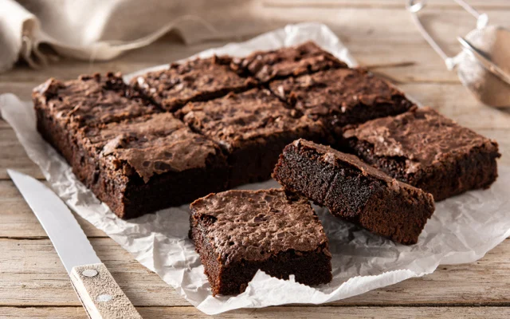

2 ovos
1 xícara de açúcar
4 colheres de sopa de manteiga derretida
1 xícara de chocolate em pó
1 xícara de farinha de trigo
1 colher de chá de essência de baunilha (opcional)
1 pitada de sal
½ xícara de chocolate picado (opcional)
Preaqueça o forno a 180 °C.
Em uma tigela, misture os ovos, o açúcar e a manteiga derretida.
Acrescente o chocolate em pó, a farinha de trigo e o sal.
Misture até formar uma massa homogênea.
Adicione a essência de baunilha e o chocolate picado, se desejar.
Coloque a massa em uma forma untada ou forrada com papel-manteiga.
Leve ao forno por aproximadamente 20 a 30 minutos.
Retire quando a superfície estiver firme e o centro ainda estiver levemente úmido.
Espere esfriar, corte em quadradinhos e sirva.